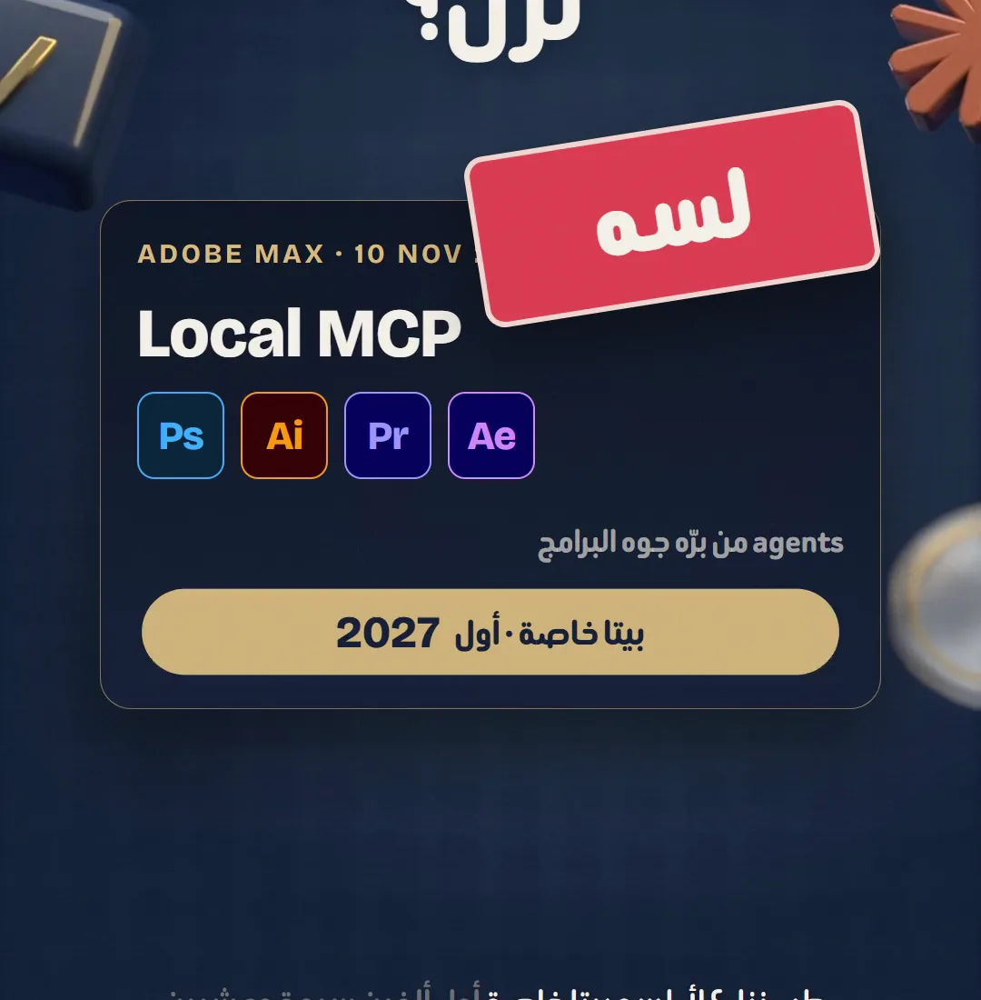
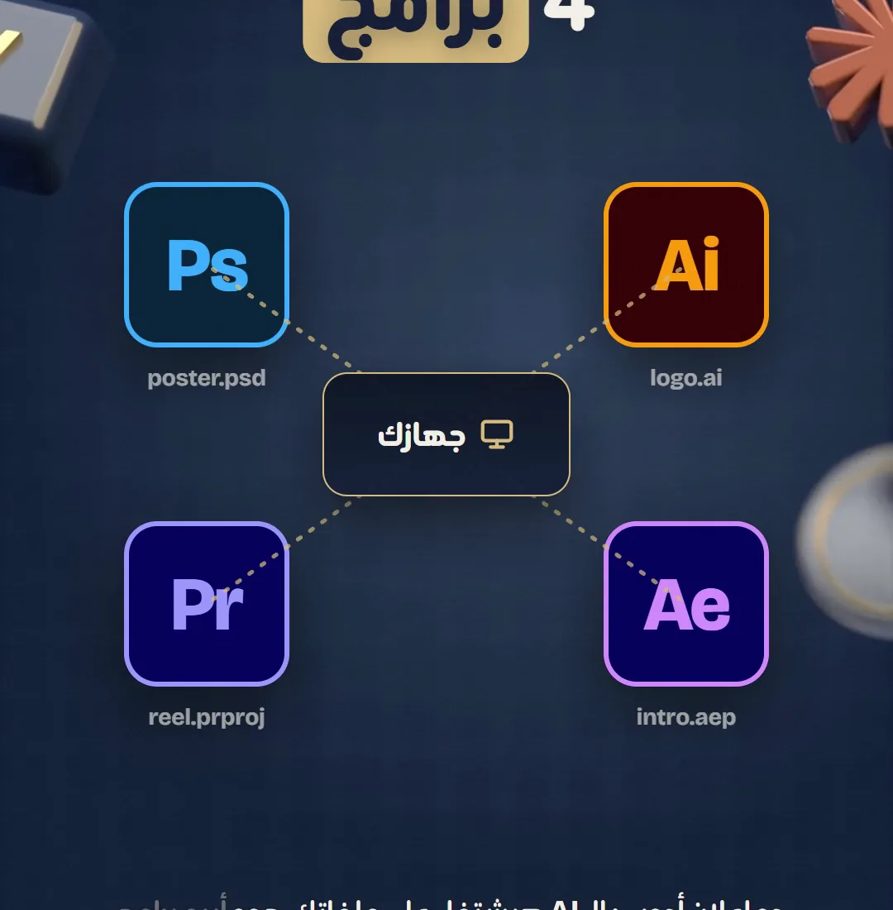
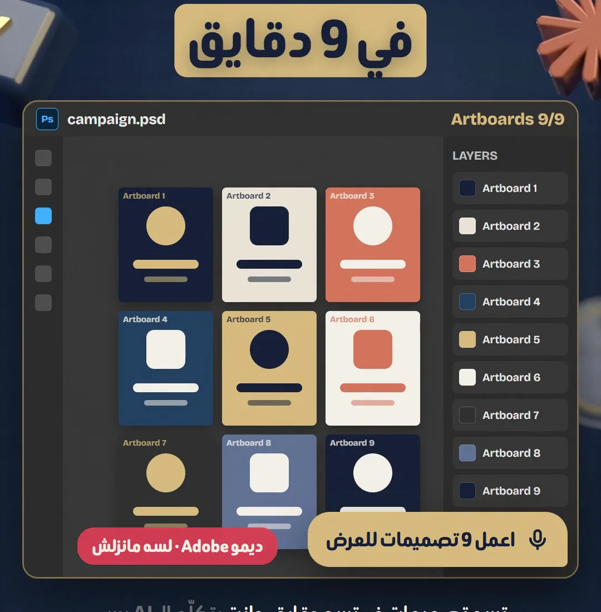
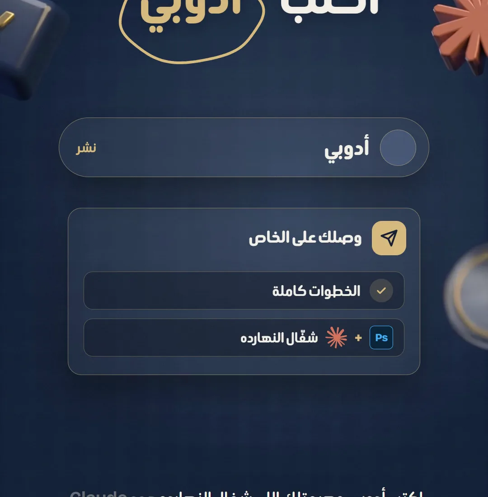

فوتوشوب وبريميــربالكـــلام
في Adobe MAX يوم 10 نوفمبر 2026، أدوبي عرضت «Local MCP»: agents من برّه هتشتغل جوه Photoshop وIllustrator وPremiere وAfter Effects على جهازك وعلى ملفاتك الأصلية. لسه مانزلش: بيتا خاصة أول 2027. بس فيه حاجة شغالة النهارده: كونكتور Adobe جوه Claude.


- 01
الخبر بالظبط
أدوبي أعلنت عن Local MCP: بدل ما الـ AI يشتغل في السحابة، الـ agent اللي بتختاره هيشتغل جوه البرنامج نفسه على جهازك. التعديلات بتحصل على ملف المشروع الأصلي، فالليرز والفيكتور والبنز والسيكوانس فاضلين قابلين للتعديل بإيدك بعد كده.
خبر The Next Web ↗
الإعلان في Adobe MAX، 10 نوفمبر 2026: بيتا خاصة أول 2027 - 02
أنهي برامج
أربع برامج: Photoshop وIllustrator وPremiere وAfter Effects. في الديمو بتاعهم agent عمل 9 artboards في فوتوشوب في حوالي 9 دقايق. أدوبي لسه ماقالتش رسمي أنهي agents هتشتغل، وقالت «الـ agents اللي بتفضّلها».

الأربع برامج، والشغل على ملفاتك وعلى جهازك - 03
نزل؟ لسه
مش متاح النهارده. بيتا خاصة في أول 2027، ولسه مفيش سعر ولا قايمة أنظمة تشغيل. اللي بيقولك إنه نزل ده مش صح. لو عايز تعرف أول ما يفتح، تابع مدونة أدوبي.
تفاصيل الخبر من The Post Flow ↗
ديمو أدوبي: 9 تصميمات من جملة واحدة (لسه مانزلش) - 04
اللي شغال النهارده
كونكتور «Adobe for creativity» جوه Claude نازل من 28 أبريل 2026: أكتر من 50 أداة من Photoshop وIllustrator وPremiere وFirefly وExpress وLightroom. بيشتغل في سحابة أدوبي (مش جوه البرنامج على جهازك). افتح Claude وسجّل دخول، وبعدين ركّب الكونكتور من اللينك، وسجّل بحساب أدوبي عشان تاخد أدوات وحدود استخدام أكتر.
ركّب الكونكتور من أدوبي ↗
اكتب «أدوبي» تحت الريل ويوصلك اللينك ده على الخاص - 05
جرّبه بجملة
بعد ما الكونكتور يشتغل، اكتب لـ Claude طلب واضح فيه الصورة والمقاس والنتيجة اللي عايزها. ابدأ بحاجة صغيرة وشوف النتيجة قبل ما تكبّر الطلب.
شيل الخلفية من الصورة دي، وخليها كحلي، وطلّعها 1080×1350 لبوست إنستجرام
نصايح صغيرة
- Local MCP لسه بيتا خاصة أول 2027: أي حد بيقولك «نزل» اتأكد من مدونة أدوبي.
- الكونكتور اللي شغال النهارده بيشتغل في سحابة أدوبي، مش على ملفاتك على جهازك.
عايز حد يعملهولك؟
مش فاضي تتعلم وتعمل بنفسك؟ أنا بعمل ريلز لبراندك بنفس الطريقة اللي بشرحها هنا.